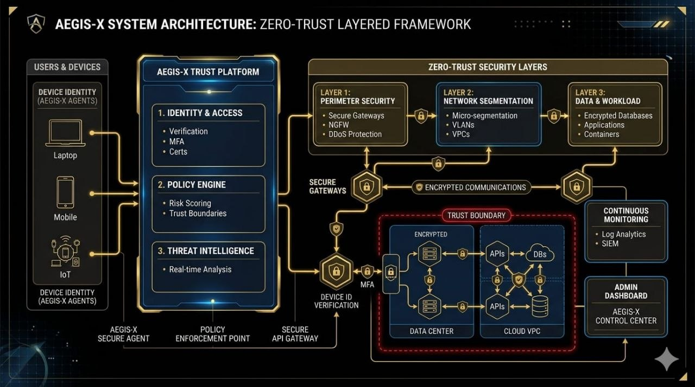
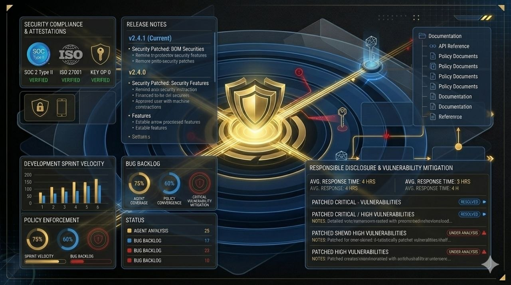

This page is dedicated to how AEGIS-X thinks about openness, system clarity, and responsible communication while the platform is still under development.
Transparency here does not mean exposing sensitive internals. It means showing design intent, development direction, and trust assumptions clearly enough that the project can be understood, questioned, and improved.
The visual sections below can be used to present architecture snapshots, roadmap visibility, security principles, and public-facing proof that the platform is being built with accountability in mind.
In security work, trust is strengthened when decisions are documented and system intent is visible. AEGIS-X uses this page to communicate the thinking behind the platform rather than relying only on surface-level claims.
This creates space for diagrams, framework views, milestone evidence, and technical summaries that help contributors, reviewers, and future partners understand where the project stands.
As the platform evolves, this section can grow into a clearer record of architecture choices, security priorities, and product progress without drifting away from the site's minimal visual language.

Architecture visuals that highlight the system structure, trust boundaries, and the security layers being shaped around the platform.
Roadmap imagery that makes the current build phases, milestones, and forward development direction easier to understand at a glance.
Security-first visuals focused on zero-trust assumptions, secure-by-design thinking, and the controls that support long-term assurance.

Public-facing updates that can represent project communication, contributor visibility, and progress shared with future collaborators.